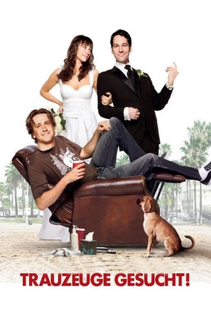
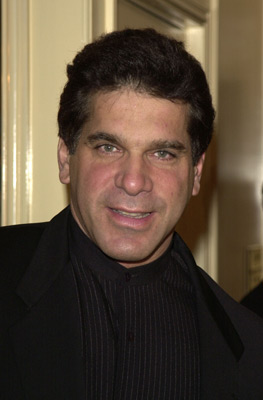

#1233 Trauzeuge gesucht!
Alternativ: I Love You, Man
 
 IMDB-Wertung: 7.0 / 10
IMDB-Wertung: 7.0 / 10  Metascore: 70
Metascore: 70 
Immobilienmakler Peter Klaven steht kurz vor seiner Hochzeit mit Zooey. Das einzige Problem ist, dass er noch keinen Trauzeugen hat. Also macht er sich auf die Suche nach dem perfekten besten Freund, der die Eheschließung bezeugen soll. Den findet er nach etlichen Fehlgriffen endlich in Sydney Five. Die beiden verstehen sich auf Anhieb gut. Doch je besser sie sich kennenlernen, desto enger wird ihre Freundschaft, sodass sie schließlich sogar zur Bedrohung für Peters Eheschließung wird. Zooey fordert eine Entscheidung.
Jahr: 2009
Dauer: 105 Minuten
FSK: 12
Land: USA Studio: Dreamworks Distribution LLCTonspuren: DD5.1 - ,
Untertitel: Deutsch,
Auflösung: 1080p (1920x1080) Größe: 8407 MB
Genre: Komödie, Liebe
Regisseur: John Hamburg
Drehbuch: John Hamburg, Larry Levin, Larry Levin
Soundtrack: Theodore Shapiro
Darsteller:
 Paul Rudd als Peter Klaven
Paul Rudd als Peter Klaven Rashida Jones als Zooey Rice
Rashida Jones als Zooey Rice Sarah Burns als Hailey
Sarah Burns als Hailey- Jaime Pressly als Denise
 Jon Favreau als Barry
Jon Favreau als Barry Jane Curtin als Joyce Klaven
Jane Curtin als Joyce Klaven J.K. Simmons als Oswald Klaven
J.K. Simmons als Oswald Klaven Andy Samberg als Robbie Klaven
Andy Samberg als Robbie Klaven- Jean Villepique als Leanne, Davis Dunn Receptionist
 Rob Huebel als Tevin Downey
Rob Huebel als Tevin Downey Kym Whitley als Female Co-Worker
Kym Whitley als Female Co-Worker- Caroline Farah als Female Co-Worker
 Mather Zickel als Gil
Mather Zickel als Gil Aziz Ansari als Eugene
Aziz Ansari als Eugene Nick Kroll als Larry
Nick Kroll als Larry- Kulap Vilaysack als Zooey's Friend
 Catherine Reitman als Zooey's Friend
Catherine Reitman als Zooey's Friend Carla Gallo als Zooey's Friend
Carla Gallo als Zooey's Friend Vicki Davis als Zooey's Friend
Vicki Davis als Zooey's Friend- Josh Cooke als Alan, Bench Press Guy
 Jay Chandrasekhar als Barry's Buddy
Jay Chandrasekhar als Barry's Buddy- Seth Morris als Barry's Buddy
- James P. Engel als Barry's Buddy
 Jerry Minor als Barry's Buddy
Jerry Minor als Barry's Buddy Joe Lo Truglio als Lonnie, Voice Crack Guy
Joe Lo Truglio als Lonnie, Voice Crack Guy Thomas Lennon als Doug
Thomas Lennon als Doug- Murray Gershenz als Mel Stein
- Keri Safran als JAR Waitress
- Greg Tuculescu als Open House Couple
- Renee Darmiento als Open House Couple
 Jason Segel als Sydney Fife
Jason Segel als Sydney Fife Ian Roberts als Venice Boardwalk Jogger
Ian Roberts als Venice Boardwalk Jogger- Ethan S. Smith als Sydney's Buddy
 Nelson Franklin als Sydney's Buddy
Nelson Franklin als Sydney's Buddy Ping Wu als Mr. Chu
Ping Wu als Mr. Chu- Jill Bartlett als Woman Leaving Sydney's House
 Matt Walsh als Impatient Golfer
Matt Walsh als Impatient Golfer- Neil Peart als Himself - Rush
- Raquel Bell als Saks Fifth Avenue Saleswoman
-  Lou Ferrigno als Himself
 Melissa Rauch als Woman Jogger Yelling at Sydney
Melissa Rauch als Woman Jogger Yelling at Sydney David Wain als Wedding Photographer
David Wain als Wedding Photographer- Dennis James Anderson als Hank Mardukas
- Craig Wedren als Wedding Band Member
- Scott Carino als Man at Counter , uncredited
- Kris Edwards als Bromancer , uncredited
- Karla Elizondo als Shopper at the Grove , uncredited
- Jordan Feldman als Jordan , uncredited
- Gregory George Frank als Shopper at The Grove , uncredited
 David Krumholtz als Sydney's Buddy #3 , uncredited
David Krumholtz als Sydney's Buddy #3 , uncredited
Datei: X:\2009(N-Z)\Trauzeuge gesucht! (2009, FSK12, 1920x1080).mkv seit 11.06.2015
Festplatte: HD 2009(G-Z)-2010(A-F)
 Es gibt insgesamt 99 Filme in der Gruppe '2009(N-Z)'
Es gibt insgesamt 99 Filme in der Gruppe '2009(N-Z)'